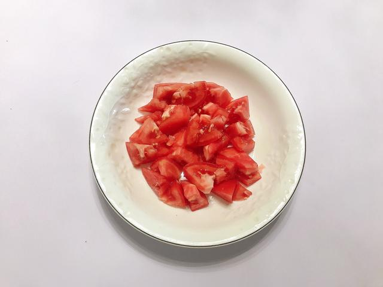
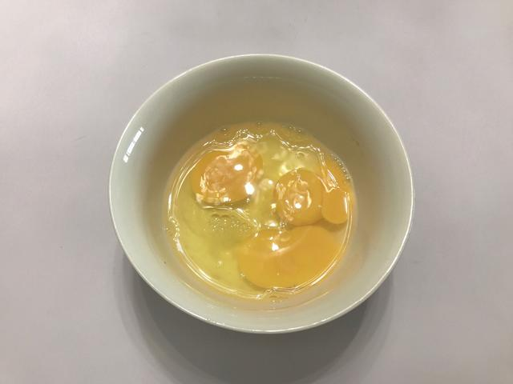
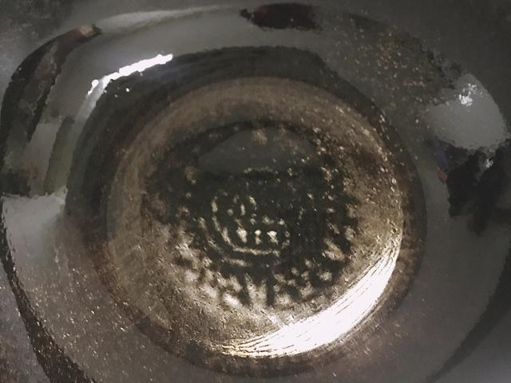
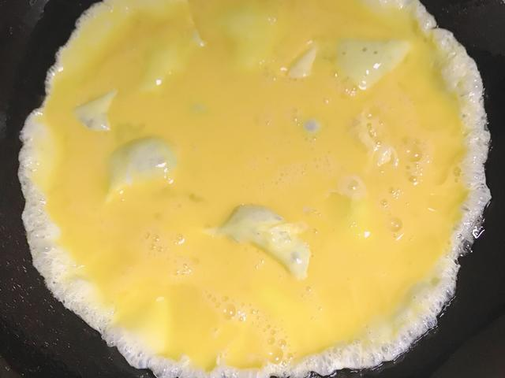
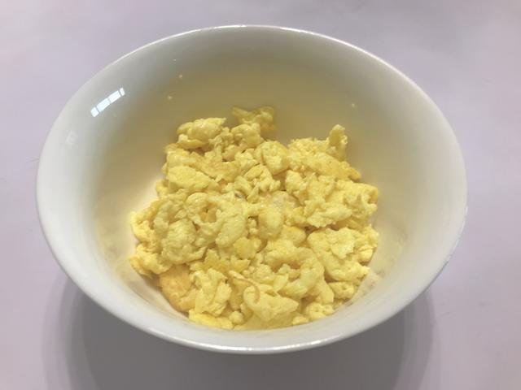
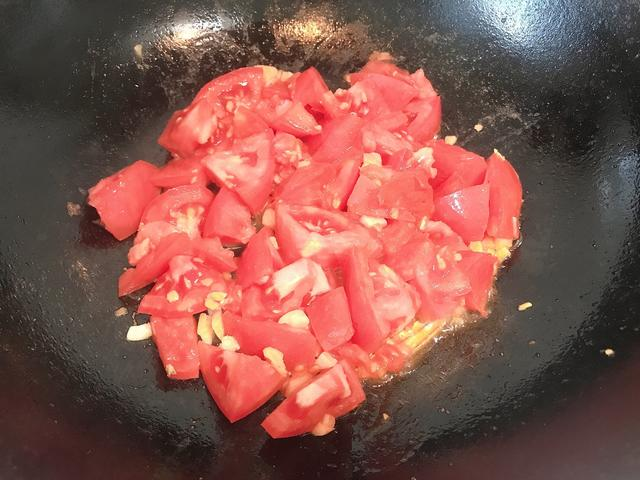
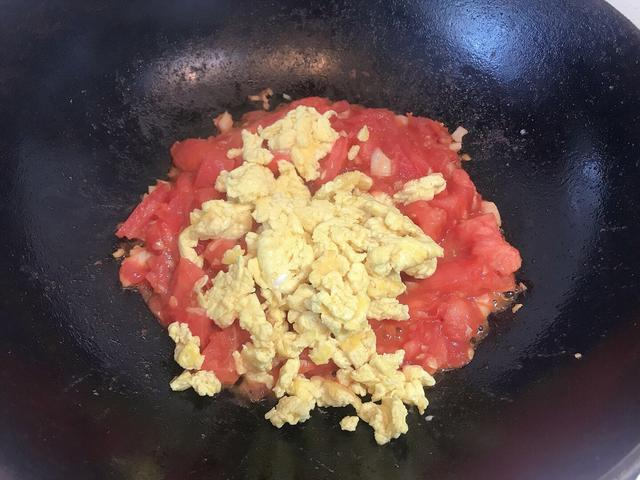
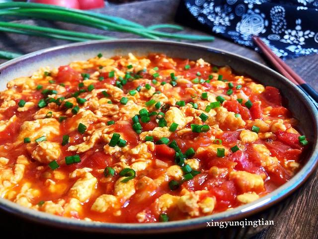

01 · 本课目标
为什么第一课是它？
因为它的反馈非常直接：油温对不对、火候过了没有，一眼就能看出来，而且失败了大不了当“番茄炒蛋碎”吃。
本课记住一句话：蛋液下锅前，先确认油温够了；下锅后，看到大块蛋刚凝固就立刻盛出来，不要让它在锅里等。
02 · 用料
买这些就够了
番茄尽量挑熟软的，捏起来微微发软、闻着有番茄味的那种，更容易炒出红汁。
还需要：一口不粘锅或铁锅、锅铲、一个大碗、一个盘子、一双筷子。新手阶段建议先用不粘锅，能少一半心理负担。
03 · 跟着做
八步，从备菜到出锅
每一步后面都写了“看到这样算对”，那是给你对照用的检查点，不用背，做的时候低头看一眼就行。
第一段 · 开火前准备（约 4 分钟）
-
STEP 备菜 · 约 2 分钟
番茄切块，小葱切碎
番茄洗净去蒂，切成约 2–3 厘米的块；小葱切成葱花。切好的番茄和葱花分别放在小盘子里。
看到这样算对：番茄块大小差不多，切口能看到汁水；不要切成小碎丁，否则一下锅就化成水。

-
STEP 备菜 · 约 2 分钟
打蛋液
鸡蛋全部磕进大碗，加入一半的盐和半勺清水，用筷子快速画圈搅打约 30 秒，直到颜色均匀、表面浮起小泡。
看到这样算对：蛋液里没有一整块蛋黄，提起来是流畅的一条线；水不用多，小半勺就够。

第二段 · 下锅开炒（约 9 分钟）
-
STEP 炒蛋 · 约 30 秒
试油温，再倒蛋液
大火把锅烧热约 20 秒，倒入一汤匙半油并摇匀。用筷子尖滴一滴蛋液进油里试温：蛋液立刻鼓起大泡、边缘翻起来，就说明油温够了。转中火，把蛋液倒进锅中央。
看到这样算对：蛋液一下锅就快速鼓起，不是慢慢摊开；如果冒很浓的白烟，说明油太热，先关火等 10 秒再继续。

-
STEP 炒蛋 · 约 30 秒
不要马上翻，等底部凝固再推
蛋液入锅后先别动。等底部凝固、表面还带一点湿润时，用锅铲从边缘往中间轻轻推，让还没熟的蛋液流到锅底，推成大块。
看到这样算对：蛋是几大块嫩黄色，不是一堆碎末；表面还有微微湿润的光泽，就立刻进行下一步。

-
STEP 盛出 · 10 秒
连油盛出，别留在锅里
鸡蛋刚全部凝固就盛到盘里或碗里。记住：盛出来时要比你觉得“刚好”再嫩一点，因为余温会让它继续变熟。
看到这样算对：盘里的蛋块表面微微发光、捏一下有弹性；如果颜色发干发黄，就是炒过头了，下次提前 10 秒盛。

-
STEP 炒番茄 · 2–3 分钟
不洗锅，直接炒番茄
锅里再补半汤匙油，中火下番茄。用锅铲的背面轻轻按压番茄块，让果肉贴着锅底，炒到边角变软、锅底出现红汁。
看到这样算对：番茄皮微微起皱，锅底有明显红汁，而不是干巴巴的；如果 2 分钟还没出汁，把火稍微调小、继续压。

-
STEP 回锅 · 15–20 秒
先加糖调味，再倒回鸡蛋
先加糖翻匀，尝一小块番茄判断酸甜；不够咸再补剩下的一半盐。然后把鸡蛋倒回锅里，转大火快速翻 15 秒，让每块蛋都裹上番茄汁。
看到这样算对：鸡蛋表面均匀挂上红汁，汤汁还留一点在锅底，不要收到全干——那一点汁是拌饭的灵魂。

-
STEP 出锅 · 10 秒
撒葱花，关火装盘
关火，撒上葱花，把菜盛进盘子。盘底带一点红汁很正常，不用回锅收干。
看到这样算对：蛋块完整、番茄软烂、汁水能流动；尝一口，酸甜咸平衡，不齁也不寡淡。

04 · 翻车急救站
做坏了也别慌
新手翻车几乎都集中在这四类，点开看原因和现在的补救办法。
蛋炒碎了，或者炒老了
为什么：油温不够就下锅，或下锅后翻得太勤；也可能是盛得太晚，留在锅里被余热继续加热。
现在怎么办：别倒掉。把蛋碎倒回番茄汁里关小火翻匀，就是一碗“番茄蛋花”版本，味道照样不差。
下次避免：油热到滴蛋液立刻鼓起再下锅；入锅后先等底部凝固，再轻轻推成大块。
番茄不出汁，整道菜干干的
为什么：番茄不够熟、切得太大块，或者火太小。
现在怎么办：把火调小一点，用锅铲背持续压番茄，大约 1 分钟就会开始出水；还不行就加一勺开水，不要加冷水。
下次避免：买捏起来微微发软的番茄，切块别超过 3 厘米。
味道太酸、太咸或太甜
为什么：番茄酸度不一样，盐又分两次加，调味时只凭感觉很容易过量。
现在怎么办：太酸就少量补糖，每次 1/4 小勺尝一次；太咸可以再加一点番茄或一小勺水稀释；太甜就补一点点盐。
下次避免：糖和盐都分次加，最后一定要先尝再出锅。
粘锅了
为什么：油不够、锅没烧热就下蛋液，或下锅后一直不翻动。
现在怎么办：先关火，把没粘住的部分盛出来，不要用锅铲硬刮黑渣。剩下的番茄正常炒，最后拌在一起不影响吃。
下次避免：新手先热锅 20 秒再倒油；用不粘锅会轻松很多。
05 · 学会标准
怎么算“学会了”？
不用和菜谱一模一样，做到下面四条，这道菜就算练成了。
-
1
不看步骤能做完 从拿番茄到装盘，中间不卡壳、不用翻手机。
-
2
蛋是大块的嫩黄 不是碎末，表面还带一点湿润，吃进嘴里是嫩的。
-
3
番茄软烂出了汁 锅底有红汁，拌饭能吃出番茄味而不是“番茄味的汤”。
-
4
味道刚好平衡 酸甜咸都不突兀；别人吃完愿意再添一筷子。